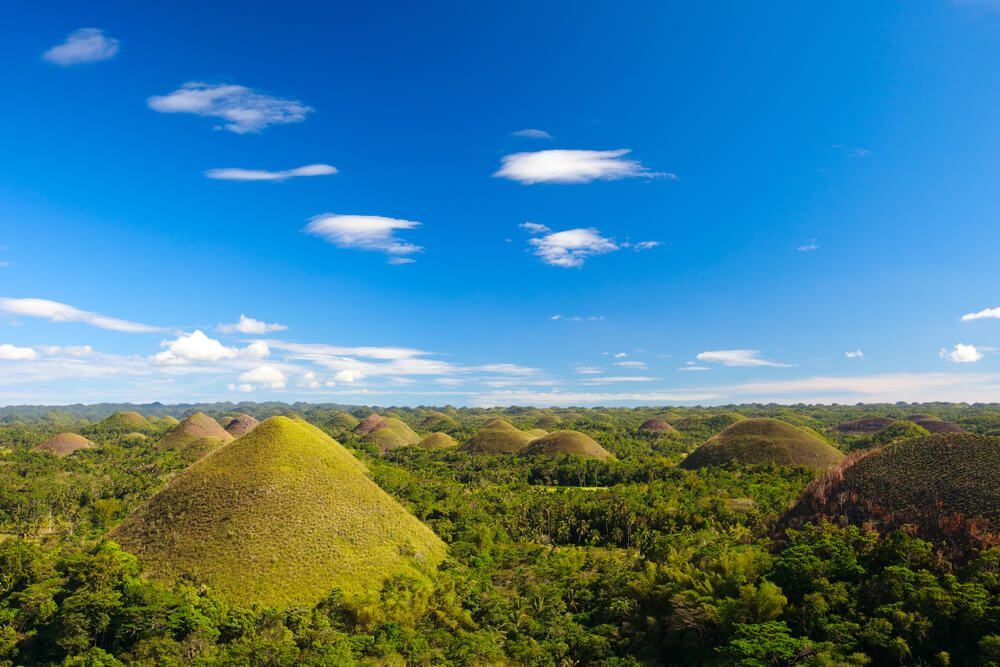
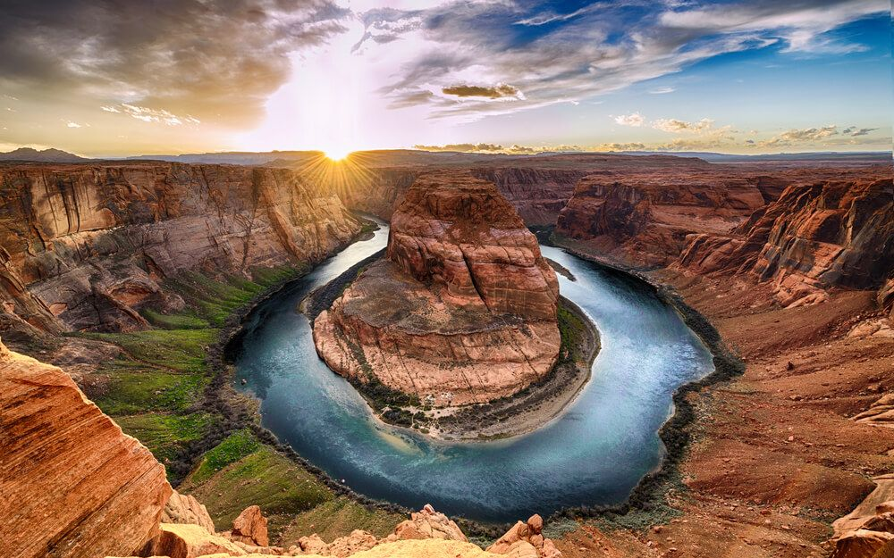
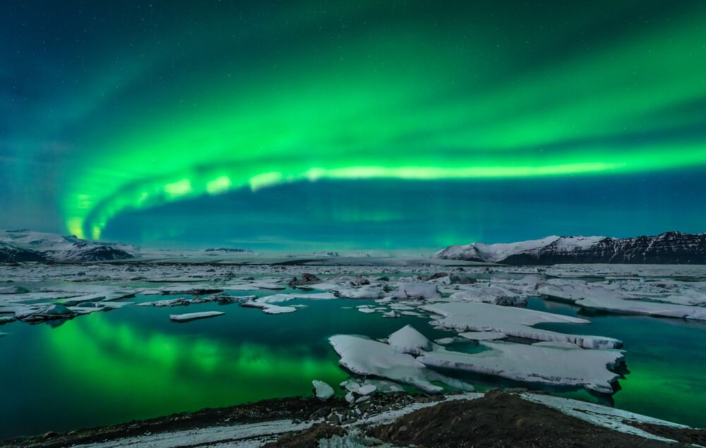
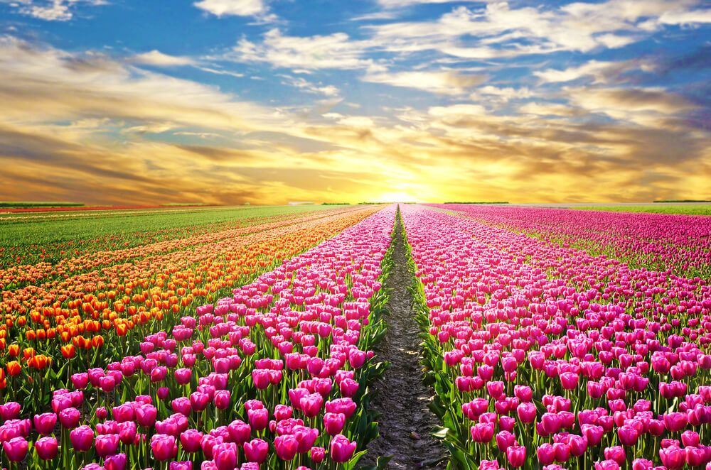
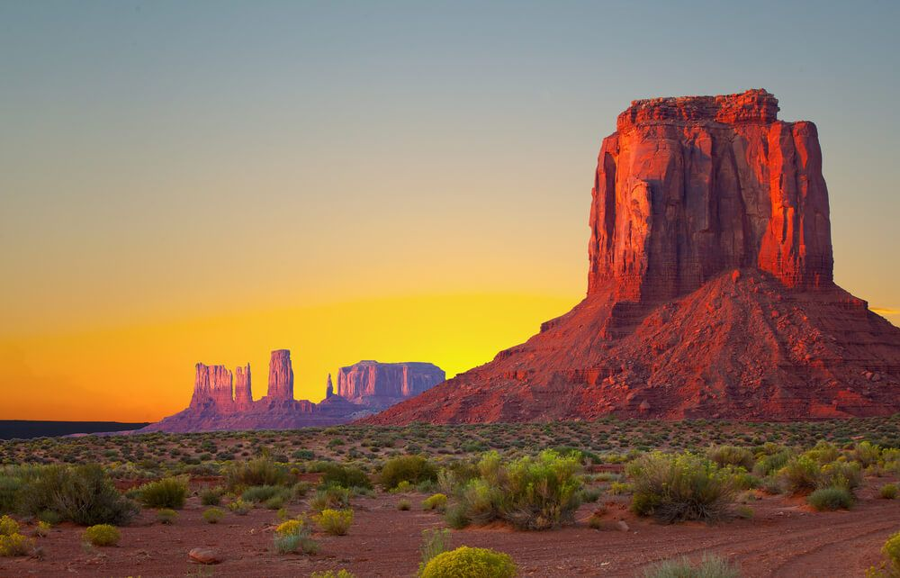
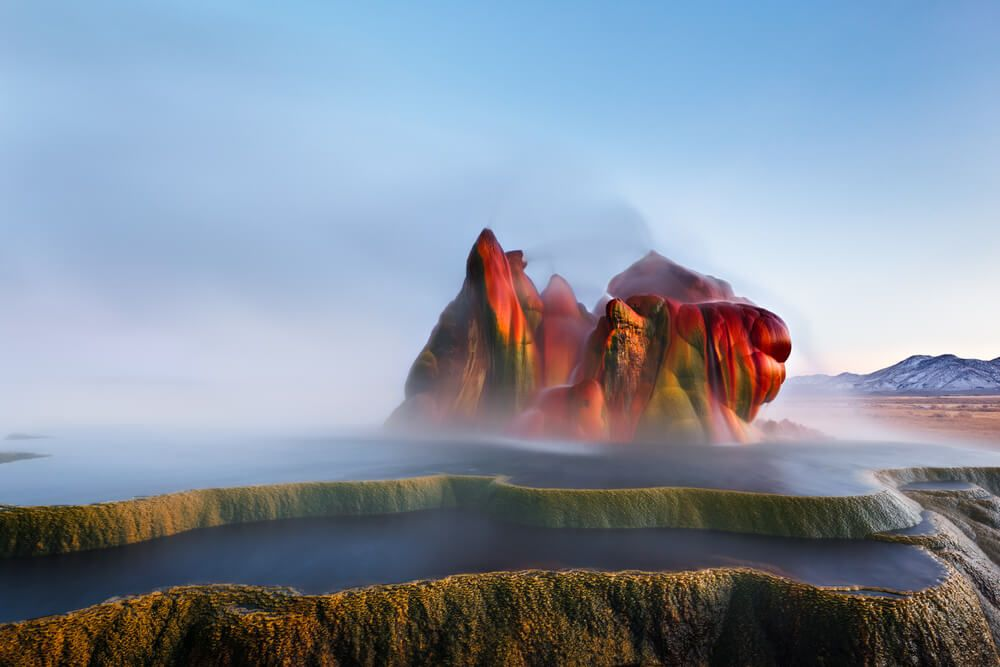

Portofolio viaggi

luogo: Colline di cioccolato a Bohol, Filippine

luogo: Grand Canyon , Arizona, Stati Uniti

luogo: Aurora boreale sul lago Jakulsarlon, Islanda

luogo: Campi di tulipani a Kop, Olanda

luogo: Monument Valley, Utah, Stati Uniti

luogo: Fly Geiser, Nevada, Stati Uniti
foto fatte da Giovanni giuliano